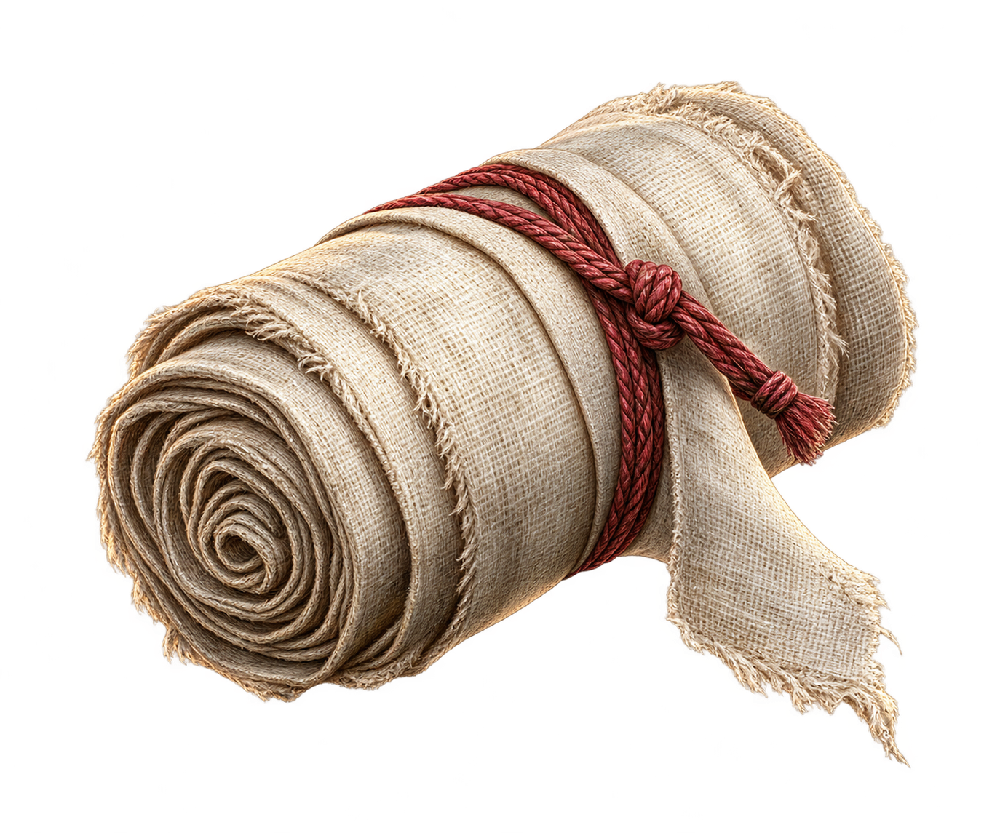
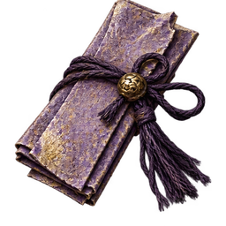
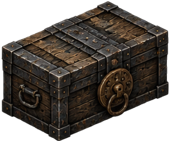

<!doctype html><meta charset="utf-8"><title>Stolen chest in the inventory</title>
<link rel="stylesheet" href="../game/src/inventory.css">
<style>body{background:#0b1013;margin:0;padding:30px;font-family:system-ui}#characterpage{width:520px;padding:16px;background:#11191e;border:1px solid #4b4b44}#characterpage h3{color:#e9dcbc;font-size:14px;margin:0 0 8px}.gear-grid{display:grid;grid-template-columns:repeat(6,1fr);gap:6px}</style>
<section id="characterpage"><section class="character-inventory"><h3>Inventory 2 / 12</h3><div class="gear-grid">
<button class="inventory-slot occupied"><small>1</small><span class="item-icon"></span><span class="item-name">Bandage</span></button>
<button class="inventory-slot occupied"><small>2</small><span class="item-icon"></span><span class="item-name">Focus charm</span></button>
<button class="inventory-slot" disabled><small>3</small><span class="item-icon"></span></button><button class="inventory-slot" disabled><small>4</small></button><button class="inventory-slot" disabled><small>5</small></button><button class="inventory-slot" disabled><small>6</small></button>
</div><div class="stolen-chest" tabindex="0" title="Stolen chest: 1000 ryo, 60 timber, 60 stone. Take it to one of your town halls or your war camp banner and press Space to cash it in."><span class="chest-art"><i></i><i></i><i></i><i></i></span><span><b>Stolen chest</b><small class="chest-loot">1000 ryo, 60 timber, 60 stone</small></span></div></section></section>
